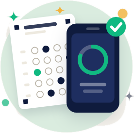
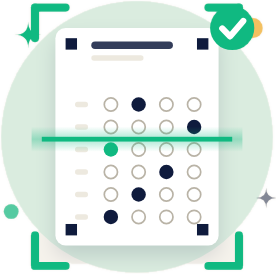
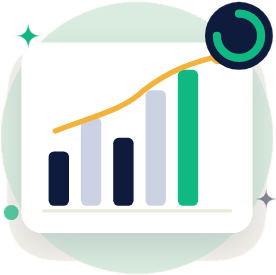
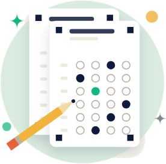
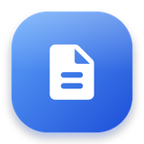

Netice'yi cihazınıza kurun
Bütün sürümler ücretsiz iner ve ilk 14 gün Pro özellikleri açıktır. Telefon ve bilgisayar birlikte kullanılabilir.
Android
Telefon ve tabletler için. Android 7.0 ve üzeri.

iPhone ve iPad
App Store'da incelemede. iOS 15 ve üzeri.

Windows
Microsoft Store'dan. Windows 10 ve 11, 64 bit. Taranmış PDF'leri toplu okur.

Mac
Mac App Store'dan. Pro aboneliğiniz iPhone, iPad ve Mac'te ortak.

Nasıl indirilir, Pro nasıl alınır?
Netice her cihazda o cihazın resmî mağazasından iner. Ödemeyi mağaza alır; kart bilgileriniz bize hiç ulaşmaz.

Android telefon ve tablet
- Google Play'de "Netice" sayfasını açın ya da aşağıdaki düğmeye dokunun.
- Yükle'ye dokunun; uygulama ücretsiz iner.
- Pro için uygulamada Profil › Netice Pro'ya girin. Ödeme Google Play hesabınızdan alınır.
İptal: Google Play › Ödemeler ve abonelikler.

iPhone, iPad ve Mac
- App Store'da (Mac'te Mac App Store'da) "Netice" sayfasını açın.
- Al'a dokunun; uygulama ücretsiz iner.
- Pro için uygulamada Profil › Netice Pro'ya girin. Ödeme Apple Kimliğinizden alınır; aynı abonelik iPhone, iPad ve Mac'te geçerlidir.
App Store'da yakında. İptal: Ayarlar › Apple Kimliği › Abonelikler.

Windows bilgisayar
- Microsoft Store'da "Netice"yi bulun ve Yükle'ye tıklayın; program ücretsiz iner, Microsoft tarafından imzalıdır.
- Pro için bize yazın ya da sitedeki ödeme bağlantısından ödeyin; lisans kodunuz e-postanıza gelir.
- Kodu programda Profil › Kurum lisansı bölümüne girin.
Okul paketleri de aynı lisans koduyla açılır.
Kurduktan sonra beş dakikada ilk rapor
Sınıfınızı ekleyin
Öğrenci listesini Excel'den, e-Okul listesinden ya da PDF'ten tek seferde aktarın.


Sınavı oluşturunSoru sayısını ve cevap anahtarını girin ya da anahtarı fotoğraftan okutun. İsterseniz kitapçığı soru bankanızdan hazırlayın.
Formları basıp okutun
"Form yazdır" ile optik formları basın, sınavdan sonra kamerayla okutun.
Raporu paylaşın
Sınav raporunu yazdırın, karneleri velilere gönderin. Uygulama içindeki kılavuz ve videolar her adımı gösterir.
Merak edilenler
Hesap açmam gerekiyor mu?
Hayır. Netice e-posta, telefon numarası ya da hesap istemez. Uygulamayı açtığınız an kullanmaya başlarsınız.
İnternet bağlantısı gerekir mi?
Okuma, analiz ve raporlar internetsiz çalışır. Yalnızca yapay zekâ ile soru üretme ve isteğe bağlı Google Drive yedeği internet ister.
Öğrenci verileri nerede saklanıyor?
Yalnızca sizin cihazınızda. Netice öğrenci bilgilerini kendi sunucusuna göndermez. İsterseniz kendi Google Drive hesabınıza yedek alabilirsiniz.
Özel bir optik kâğıt ya da okuyucu cihaz gerekir mi?
Hayır. Netice optik formunu herhangi bir yazıcıdan normal A4 kâğıda basarsınız. Başka yayınevlerinin formları için de şablon tanımlayabilirsiniz.
Kâğıt eğik ya da gölgeli olursa ne olur?
Netice köşe işaretlerini bulup kâğıdı düzeltir, gölgeye göre eşiği ayarlar. Kamerada "Biraz yaklaşın" ya da "Işık yansıyor" gibi ipuçları görürsünüz. Okunamayan işaretler kontrol listesine düşer.
Telefonla bilgisayar arasında veri taşıyabilir miyim?
Evet. Ayarlar'dan yedek dosyası alıp diğer cihazda geri yükleyebilir ya da aynı Wi-Fi ağında ortak sınav sonuçlarını tek cihazda toplayabilirsiniz.
14 günlük deneme bitince ne olur?
Okuma, soru bankası ve temel raporlar ücretsiz olarak devam eder. Dönem sonu raporu, karneler, A–H kitapçık gibi Pro özellikleri için Pro'ya geçebilirsiniz. Verileriniz silinmez.
Aboneliği nasıl iptal ederim?
Android'de Google Play > Abonelikler, iPhone ve Mac'te Ayarlar > Apple Kimliği > Abonelikler bölümünden. İptal edilen abonelik dönem sonuna kadar geçerlidir.
Pro'yu kaç cihazda kullanabilirim?
Bir öğretmen, bir lisans: Pro aynı anda en fazla 1 telefon ya da tablet ve 1 bilgisayarda açık olur. Yeni bir cihaza geçtiğinizde Pro ekranındaki "Bu cihazda kullan" düğmesine dokunmanız yeterli; eski cihazda Pro kapanır, verileriniz silinmez. Bunun için hesap açmanız gerekmez. Okulunuzda birden çok öğretmen kullanacaksa okul paketi hem daha uygun hem daha ucuzdur.
Okulumuz için toplu alabilir miyiz?
Evet. 5 öğretmenden başlayan okul paketinde %25'ten %45'e kadar indirim var. 50 ve üzeri öğretmen için kurum lisansı ile bütün öğretmenler Pro olur, yönetici paneli açılır. Teklif için bize yazın.
Polis Akademisi, Askeri Okullar, Jandarma Okulları ya da üniversitelerde kullanılabilir mi?
Evet. Kurum bilgilerinde kurum türünü seçtiğinizde rapor başlıkları ve imza alanları o kuruma göre düzenlenir.
Hangi dilleri destekliyor?
15 dil: Türkçe, İngilizce, Almanca, Azerbaycan Türkçesi, İspanyolca, Portekizce (Brezilya), Rusça, İtalyanca, Fransızca, Çince, Japonca, Korece, Hintçe, Endonezce ve Arapça.
Soru, öneri ya da okul teklifi için yazın
Okul paketi teklifi için okul adını ve öğretmen sayısını yazmanız yeterli.
info@neticeoptik.com